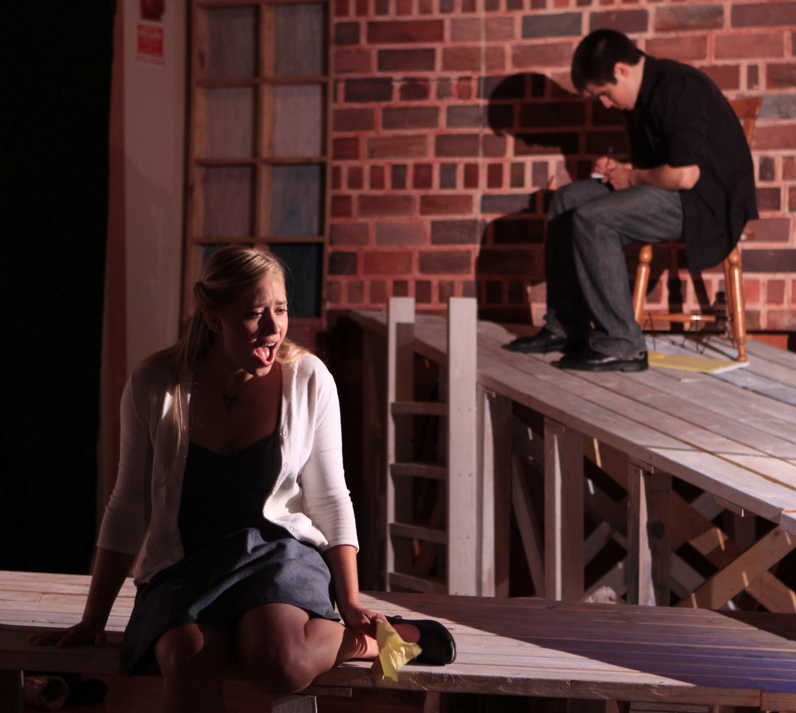
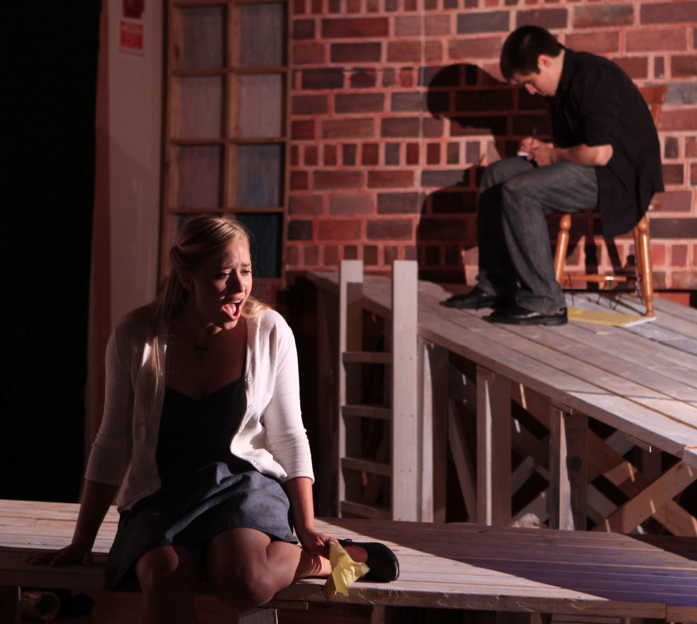
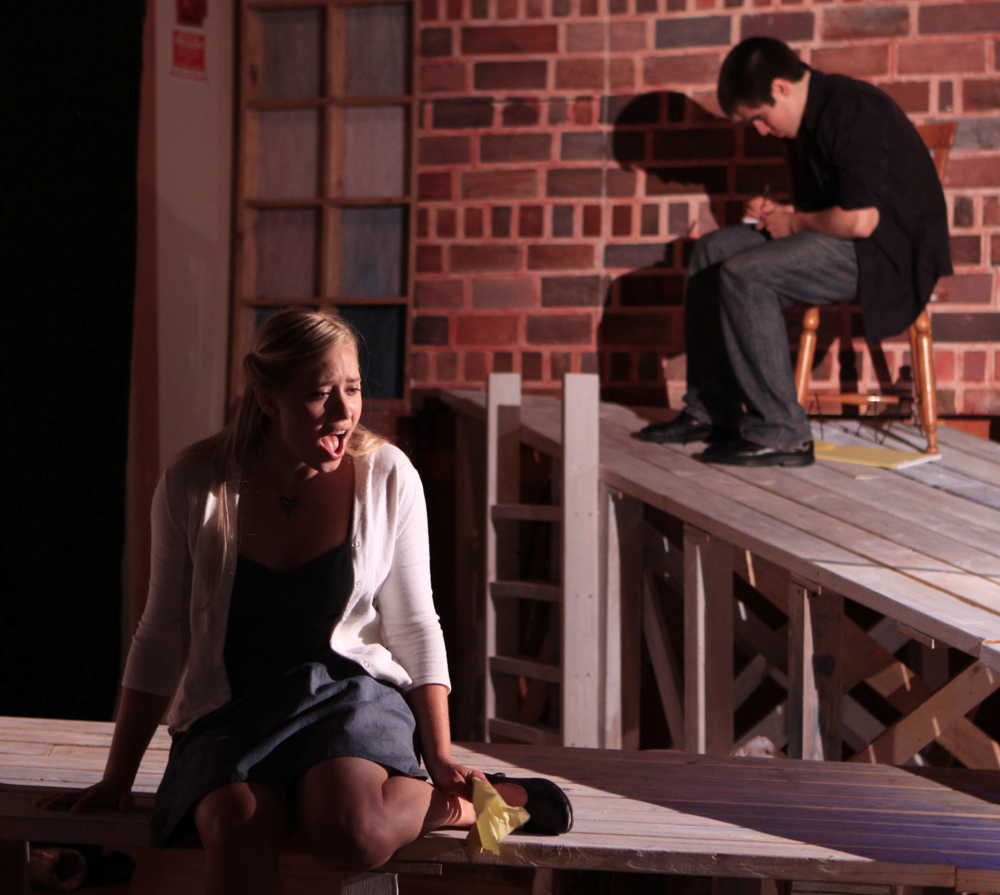

All the world's a [p]age... (under development)

 

artist // techie // scenic designer // creative
PAINT
GRAPHITE
MIXED MEDIA
My artwork (shown chronologically in opacity) demonstrates my skill, versatility, and growth in exploring color theory, composition, technique, and overall passion for representation of the complex— in taking apart seemingly simple 'moments' and then piecing them back together.
All the world's a [p]age... (under development)

Wabi-Sabi
'… a beauty of things imperfect, impermanent, and incomplete
… a beauty of things modest and humble
… a beauty of things unconventional.'
Details
Brilliant flashes of copper-tinted leaves become highlights atop the predominantly neutral surface, in which a marble and oak bar-table defines the space. Empty pastel craft beer bottles contrast the recycled nature, bringing into dialogue two forms of human impact on the environment, while also serving as a gentle reminder to guests engaging in consumerism around the table.
Media
Repurposed Christmas Tree Decorations (copper spraypainted foliage & blue frosted berries) & Recycyled Oedipus Brewing Collaboration Brew Edition Bottles
Greeting Card Design
'...they can be so much more than two-fold'
Details
Card consists of three layers that form four hearts with an inside reverse fold. Designed as a valentine, it affords a surprise as each layer (tailored to recipient) is revealed, and holds a note (folded similarly) at its center.
Media
Watercolor Paper, Ink, Coffee, Wine, Beer, Wintogreen Oil, InkJet Print, & Metal Leaf


Occasion
Valentine's Day
Details
Commissioned for a 'LuLu', every heart corner has 'LU', hinting at 'luv u'. Each layer is dyed with coffee, wine, and beer. Layers depict where the couple met, favored writers, and shared affinities.


Details
Card design is formulated from number of layers needed for the theme, and is pared down by number of petals for each inner layer. Each petal overlaps with the next creating a rosette to 'pop' open by recipient and discover as a blooming flower.
Media
Rives BFK White 300 gr., Mixed-Metal Leaf, Watercolor Pencil

Occasion
Wedding at Stanford Univerisity
Details
Created for "Elvia & Lalo" this congratualotory card has two layers stylizing the floral seal in the center of Stanford University's 'quad', right outside the Memorial Church.


Details
This textured card is made up of a series of 'terrain' like cutouts. Each layer follows the shape of a classic heart, following the theory that if you trace a line (by hand) over and over you slowly lose the original shape; in this way we slowly develop a kind of terrain of the heart, making the card a more interesting diversion from the classic 2D concept.
Media
Balsa wood & Blue and Metallic India Ink

Occasion
Simple Sweet Occasion
Details
Created as a special romantic birthday card, it is hand cut (though concept would be better scaled to be laser cut for precision) and it held two accordian folded pieces pressed inside and held in by wood heart cutout. Concept easily extends to being in any primary shape of interest by occasion


Details
This 'wallet' like origami card is suitable for a gift/greeting of up to 4 parties. With five compartments it is suited to hold four cards from 'gifters' and a final material gift such as money or special tickets to an event in its topmost compartment.
Media
Heavyweight Cold Press Paper, Cardstock, and Metal Leaf.

Occasion
Birthday
Details
Created for a father this birthday card was from four parties and held notes from four gifters and tickets to a comedy show. Taking a more minimalist approach to decoration, it bears a broken up coin in metallic leafing across its folds, hinting at its wallet-like character.